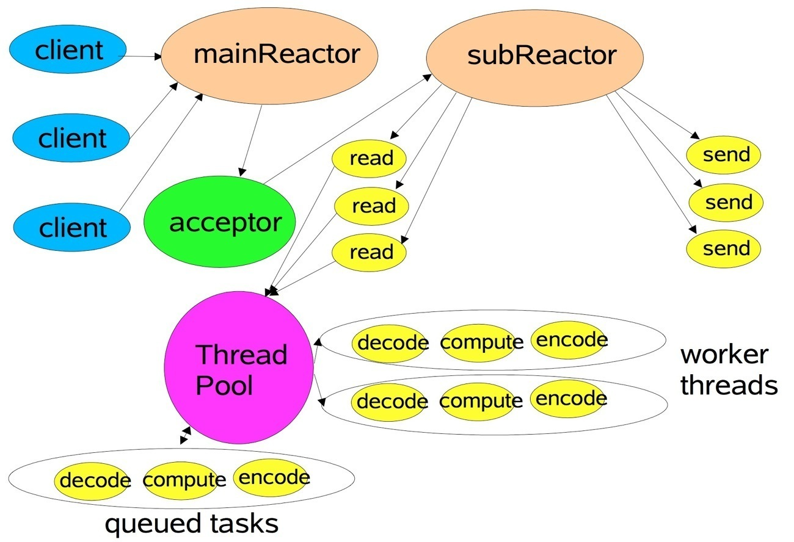
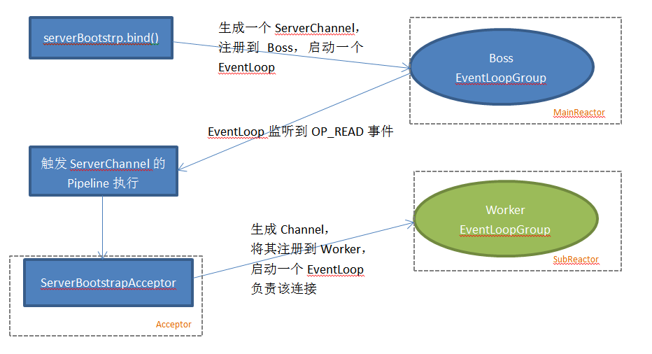
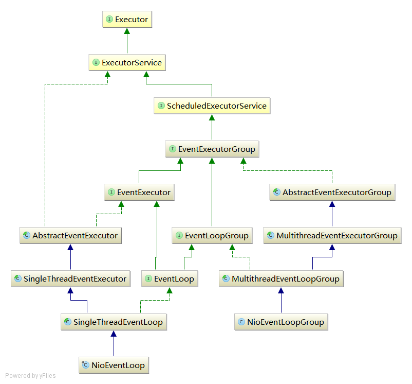
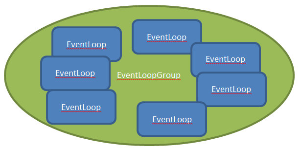
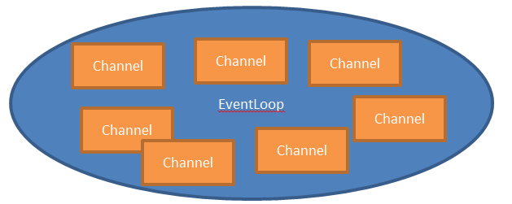

前言
我们一提到Netty就不得不提它的Reactor模型。Netty是基于Multiple Reactor模型，Mulitple Reactor模型有这样的特点：
- 有一个NIO线程专门用于监听服务，接受客户端的请求
- 网络IO操作（读、写等）有一个NIO线程池负责
- 一个NIO线程可以同时处理N个连接，但一个连接只对应一个NIO线程

对应到Netty的代码，过程如下：

从图中我们可以看到这里的NIO线程池被包装成了一个叫EventLoopGroup的对象，下面我们就重点分析一下这个对象做了哪些事情。
结构图

EventLoopGroup

EventLoopGroup没有什么特别的，就是个包装过的线程池，池子里的是EventLoop
看它的父类MultithreadEventExecutorGroup，可以看到它有一个EventExecutor类型的数组属性children，我们group.register(channel)时就会从这里选一个EventLoop进行分配。
EventLoop

看它的父类SingleThreadEventExecutor，可以发现它是内部带一个taskQueue和delayTaskQueue的单线程执行器。
EventLoop.execute(runnable)是一个很重要的方法。如果线程没启动它会启动线程，然后将任务放到队列里。像Unsafe和ChannelHandlerContext的很多方法都是调用它。
@Override
public void execute(Runnable task) {
if (task == null) {
throw new NullPointerException("task");
}
boolean inEventLoop = inEventLoop();
if (inEventLoop) {
addTask(task);
} else {
startThread();
addTask(task);
if (isShutdown() && removeTask(task)) {
reject();
}
}
if (!addTaskWakesUp && wakesUpForTask(task)) {
wakeup(inEventLoop);
}
}
startTread()其实真正执行的是EventLoop中另一个重要的方法run()，它EventLoop名字的由来，应该也是由于这个实现是个无限循环的原因吧？
public final class NioEventLoop extends SingleThreadEventLoop {
@Override
protected void run() {
for (;;) {
oldWakenUp = wakenUp.getAndSet(false);
try {
if (hasTasks()) {
selectNow();
} else {
select();
if (wakenUp.get()) {
selector.wakeup();
}
}
cancelledKeys = 0;
needsToSelectAgain = false;
final int ioRatio = this.ioRatio;
if (ioRatio == 100) {
processSelectedKeys();
runAllTasks();
} else {
final long ioStartTime = System.nanoTime();
processSelectedKeys();
// NioEventLoop在单线程里同时处理IO事件和其他任务，
// NioEventLoop尽量（但不能保证）按照给定的比率（默认为50%）
// 来分配花在这两种任务上的时间
final long ioTime = System.nanoTime() - ioStartTime;
runAllTasks(ioTime * (100 - ioRatio) / ioRatio);
}
if (isShuttingDown()) {
closeAll();
if (confirmShutdown()) {
break;
}
}
} catch (Throwable t) {
logger.warn("Unexpected exception in the selector loop.", t);
try {
Thread.sleep(1000);
} catch (InterruptedException e) {
// Ignore.
}
}
}
}
private void processSelectedKeys() {
if (selectedKeys != null) {
//该方法即代表使用了优化的SelectedKeys，优化是在openSelector()方法做的，具体咋优化的看参考资料
processSelectedKeysOptimized(selectedKeys.flip());
} else {
processSelectedKeysPlain(selector.selectedKeys());
}
}
private void processSelectedKeysOptimized(SelectionKey[] selectedKeys) {
for (int i = 0;; i ++) {
final SelectionKey k = selectedKeys[i];
if (k == null) {
break;
}
final Object a = k.attachment();
//这里可以看出一个EventLoop（也就是一个线程）对应着多个Channel
if (a instanceof AbstractNioChannel) {
processSelectedKey(k, (AbstractNioChannel) a);
} else {
@SuppressWarnings("unchecked")
NioTask<SelectableChannel> task = (NioTask<SelectableChannel>) a;
processSelectedKey(k, task);
}
if (needsToSelectAgain) {
selectAgain();
selectedKeys = this.selectedKeys.flip();
i = -1;
}
}
}
//这里已经是我们熟悉的Java NIO代码了
private static void processSelectedKey(SelectionKey k, AbstractNioChannel ch) {
final NioUnsafe unsafe = ch.unsafe();
if (!k.isValid()) {
// close the channel if the key is not valid anymore
unsafe.close(unsafe.voidPromise());
return;
}
try {
int readyOps = k.readyOps();
if ((readyOps & (SelectionKey.OP_READ | SelectionKey.OP_ACCEPT)) != 0 || readyOps == 0) {
unsafe.read();
if (!ch.isOpen()) {
return;
}
}
if ((readyOps & SelectionKey.OP_WRITE) != 0) {
ch.unsafe().forceFlush();
}
if ((readyOps & SelectionKey.OP_CONNECT) != 0) {
int ops = k.interestOps();
ops &= ~SelectionKey.OP_CONNECT;
k.interestOps(ops);
unsafe.finishConnect();
}
} catch (CancelledKeyException e) {
unsafe.close(unsafe.voidPromise());
}
}
}
我们不应该在NioEventLoop里执行耗时的操作（比如数据库操作），这样会卡死NioEventLoop，降低程序的响应性。
日期：2014-07-17、2014-07-23
参考资料：Netty4学习笔记（5）-- NioEventLoopGroup继承层次结构、Netty4学习笔记（6）-- NioEventLoop继承层次结构、Netty系列之Netty线程模型、Netty 4.x学习笔记 – 线程模型